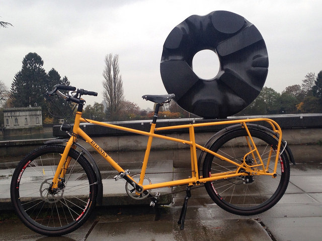

Note: There is now a website for Terra Nostra, which I built! LUCO no longer rehearses near the Duwamish, though I still bike to rehearsal. -- May 8, 2018
Next Saturday, June 20th, I’ll be playing a concert with the Lake Union Civic Orchestra at Meany Hall. You can get tickets here, or at the door. The program we’re playing has turned out to be timely, and it fits well with a lot of things that I’ve been thinking about lately.
John Adams, Short Ride in a Fast Machine
This piece is from 1986, it’s only a few minutes long, and it’s a rhythmic fireworky thing that makes my brain short-circuit a little. Nobody is quite sure what it’s about- some people say it was inspired by a ride in a friend’s sports car, others say it’s about the BART in San Francisco.
I think it’s particularly fun and funny because I normally get to LUCO rehearsals by way of a not-short ride on a slow machine.

The machine itself isn’t that slow, I guess, but the engine is.
Christophe Chagnard, Terra Nostra
It’s a lovely and infrastructure-y ride to and from the rehearsal space, which is in a Parks Department building near the Duwamish. It takes me through the International District, during which I smell the sea on my way there, and wonderful food on my way back. Then on to the waterfront, which at the moment is both a tour of Seattle’s shipping and economic infrastructure, and our significant investment in human and environmental disaster.
After Pioneer Square, I pass through the construction site for the new seawall, and onto a newly-created bike path that takes me right past poor stuck Bertha. There is a growing encampment of people who have nowhere else to live under the bridge at the south end of this path. It seems like they’re making the best that they can out of their situation. I see them reading books a lot of the time.
Then I merge onto East Marginal Way, which is full of large trucks and dinosaur sized shipping cranes and port authority police lots and a skate park. I’m on the road for a while, and I can judge whether I’m running late by a certain cargo flight path that comes into Boeing Field every week.
I turn to cross Harbor Island and the bridge over the Duwamish offers more encampments, and Nootka roses, and rabbits if you can spot them. There’s often a lot of birdsong here, which I wouldn’t hear if I were in a car. Sometimes I see seals splashing around at the mouth of the river, and at the right time of year, people are crowded shoulder-to-shoulder fishing for salmon.
The mouth of the Duwamish is the best place to fish for salmon in my opinion, because the Duwamish is too polluted for them to spawn. They’re just going to suffocate anyway when they swim far enough up in there, so we may as well give them a faster death and then eat them.
After carefully crossing several lanes of Spokane Street that are full of large trucks- short haul shipping traffic– it’s time to go under and then over the low West Seattle Bridge, to leave Harbor Island. There’s a bike counter at the foot of it, and I look over my shoulder to watch it count me as I pass. The weather was particularly hostile one week, and I was number 63, and my shoes were full of rain; last week, I was not even one of the first 1200 people to cross in the sunshine.
You can get a good view of the Polar Pioneer at the west end of the bridge. It’s just the other side of the Duwamish from there. The lights on it are always on and it dwarfs the other vessels and buildings and trains and trucks and people and everything.
Go and see it for yourself; it’s a lovely walk or bike ride. The bus goes there, too. Stop on your way to Alki and take a look at it.
I am riding a bike to an orchestra rehearsal and lately, one of the last things I ride by, right before I get off the bridge and go by a car repair shop and a salvage yard and a recycling center, is an oil drilling platform. I’m mentioning this specifically because, like the oil drilling platform, one of the pieces that the orchestra is rehearsing is all about global climate change.
The piece, called Terra Nostra, is composed by the man who conducts the orchestra that will play it. This concert is its world premiere, and the performance will feature pictures and poems as well as music. It was specifically commissioned to be about climate change and its relevance continues to grow by the moment. Terra Nostra is a big history look at Earth, its citizens, and what we are doing to ourselves. It’s great fun to play- there are lovely delicate parts, there are rhythmic groove parts, there are funky technical bits.
I am literally fiddling while Rome burns.
Sergei Rachmaninov, Piano Concerto #3, played by Joel Fan
I’m glad we all get to immerse ourselves in the lush world of Rachmaninov after that, in the rollercoaster of human emotion and romanticism, and Joel Fan is a brilliant tour guide. It is a rare opportunity for community orchestras to play with artists like Joel Fan; we’re lucky to get to.
You have heard this concerto, even if you don’t think you have, I know you have heard it, because pop songs have stolen so many bits of it. You should come hear Joel play it, because he’s brilliant and we will have a camera on his hands so that you can see what I get to see from where I sit in the orchestra by glancing to my right, which I assure you I will be doing as often as possible.
Come listen to this; it has everything that you think a piano concerto should have, and it’s astonishingly good. If you cheer enough, he’ll play an encore, and the orchestra will, too. You want this to happen.
—
At the end of each rehearsal, I have a snack and get on my bike and go back home, and it’s mostly uphill, which means I have a lot of time to think while I let my legs tick over and I crawl back up through the cool night air. This week, we were so close to the solstice that the sky was still tinged with orange when I left the rehearsal space at 9:45, and there were stars out, and a looming oil rig, and a ferris wheel, and a big flock of seagulls, and some other people out on bikes, walking dogs, doing whatever they do. The man who lives under the West Seattle Bridge was home. Back on the hill, I saw some guys riding a contraption made by welding two tall-bikes together side by side, and I whooped and yelled at them, and then I went home and put my bike and my violin away and had a beer.